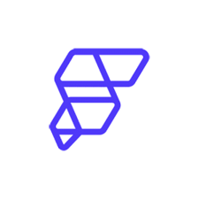

| Year | Institution | Course | Result |
|---|---|---|---|
| 2023 - 2027 | Universiti Putra Malaysia (UPM) | Bachelor of Software Engineering | CGPA: 3.911 (Current Semester) |
| 2022 - 2023 | Universiti Teknologi MARA (UiTM), Dengkil | Foundation in Science | CGPA: 4.00 |
| 2017 - 2022 | Kolej Tun Datu Tuanku Haji Bujang, Miri | Science Stream | Sijil Pelajaran Malaysia (SPM): 8A 1B+ |
Developed a prototype attendance system using Laravel and Laragon to enhance accuracy in student and lecturer attendance tracking. This project enhance my skills in web development and database management.
Participated in the Mastering Flutter workshop organised by the Software Engineering Club (SEC), where I gained hands-on experience in Flutter development using  FlutterFlow (https://www.flutterflow.io/)
Projects I built during the workshop:
Designed and built an Arduino-based floor sensor prototype to help monitor rising water levels in flood-prone areas. This project gave me the opportunity to explore the integration of hardware and software solutions for real-world problems.
As I progress through my Bachelor's degree, I'm developing my skills in Java, MySQL, Laravel, Flutter and always looking to learn more.
Collaborated on various projects and took leadership roles in university assignments and activities.
Developed strong verbal and written communication skills through academic writing and project presentations.